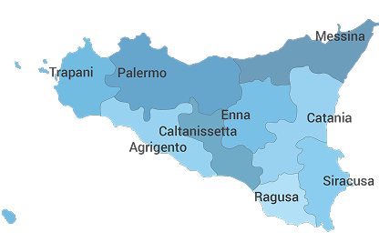

Sole in piazza

Palermo:
Piazza Pretoria
Storica piazza rinascimentale di Palermo, famosa per la sua monumentale fontana.

Catania:
Piazza Università
Elegante piazza nel cuore di Catania, simbolo della vita culturale cittadina.

Messina:
Piazza del Duomo
Piazza principale, celebre per il suggestivo campanile con l’orologio astronomico.
La Sicilia
tra terre e province
La Sicilia, divisa in nove province, offre storia, paesaggi, città d’arte, mare e monti, rendendola una destinazione ricca di sorprese.
Scopri di più